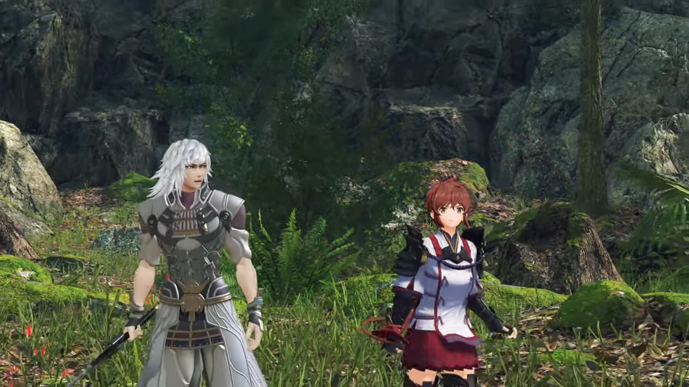
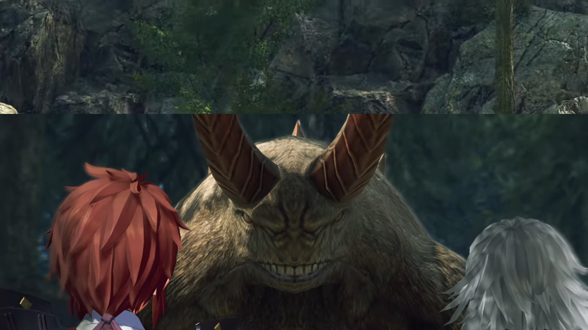
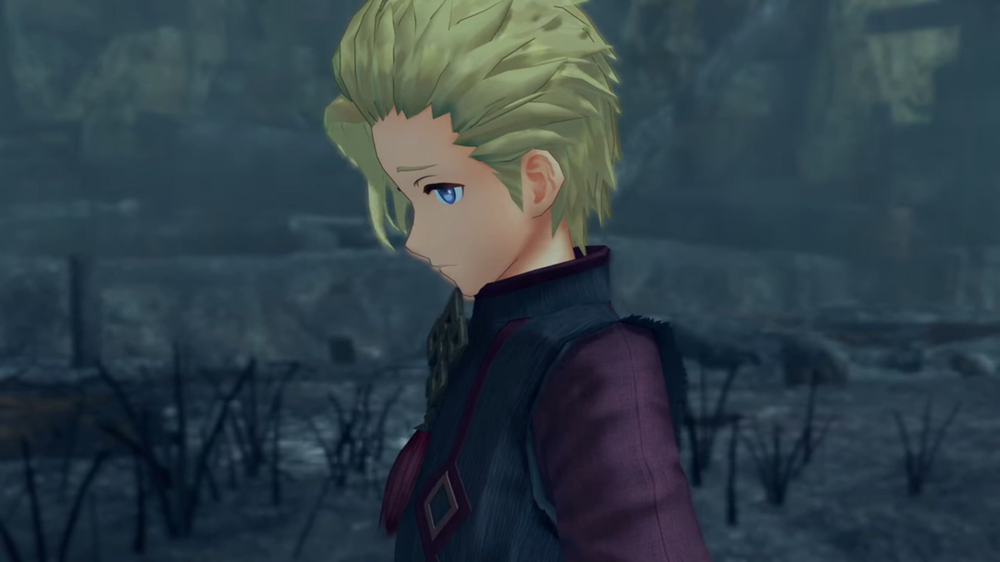
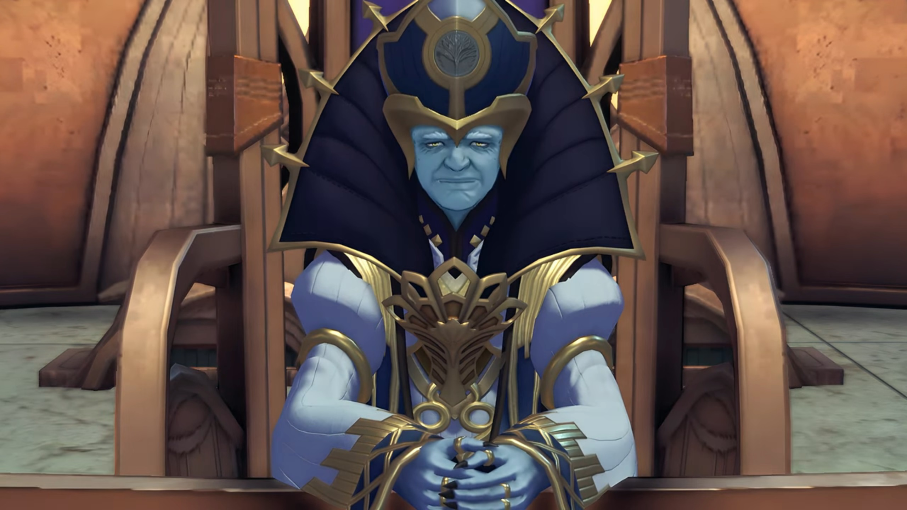
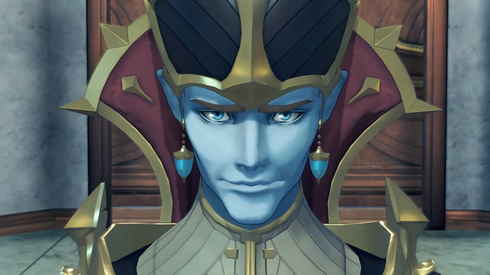
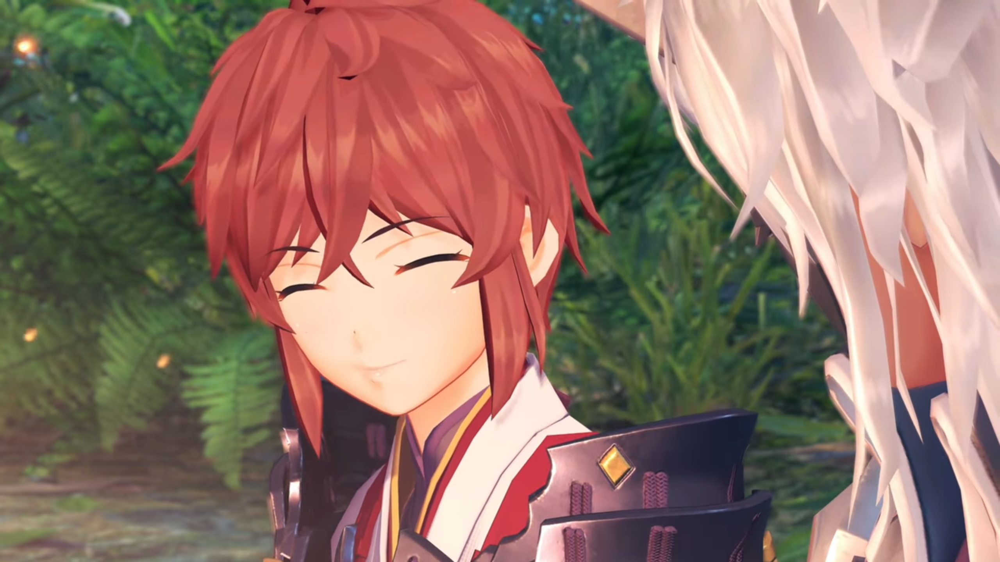
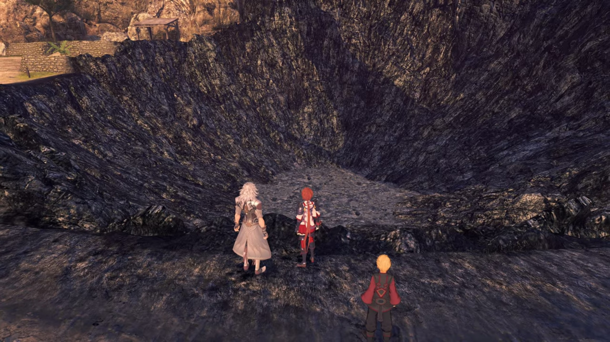
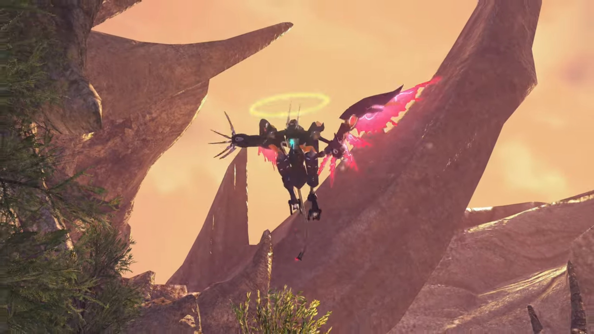
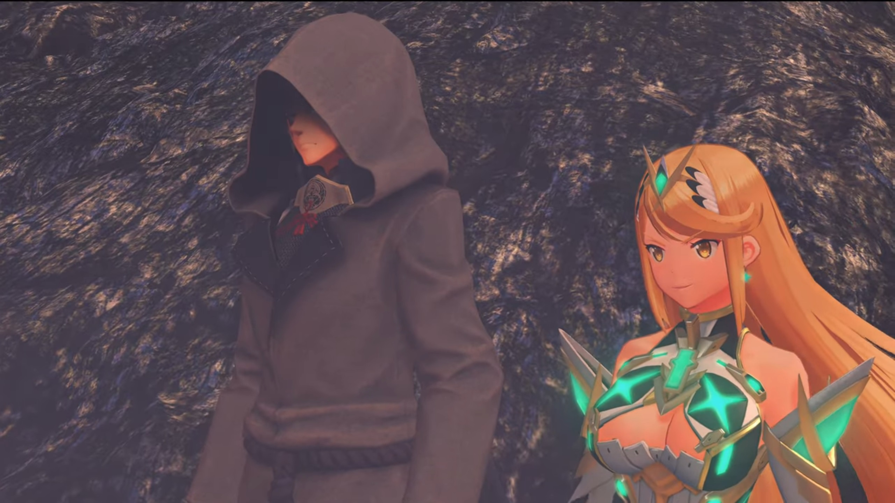
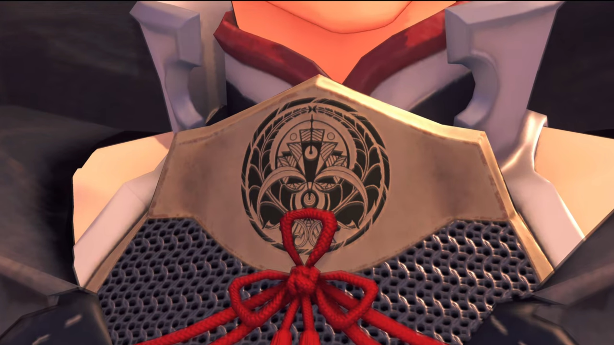

Where It All Started
{{footnote: Narrated by Jin.}}"The year... was 3564. The 107th Indoline Praetor, Rhadallis... had sent an armed expedition... against the country of Coeia. Its capital, Omrantha, fell overnight- and sank beneath the clouds, along with the rest of the Titan. The destruction of Coeia shocked all the nations of Alrest. Officially, the act was attributed... to a military alliance led chiefly by Indol... and the emerging power- of Mor Ardain. In fact, it had been the work of one Blade. The Aegis, a man- known as Malos..."
The armed Titans one-sided slaughtered the weakly-armed soldiers.
Malos slammed down from the sky, a dome of his energy grew larger and larger, wiping out every single soldier and Titans on the battlefield.
"...said to be- the Architect's word incarnate. Back then, neither Lora nor myself knew... how closely his fate... would prove to be tied with ours... in the days to come..."
Inside his Artifice, Malos exclaimed, "You're that eager to die? Then allow me to assist!" He aimed his artifice's cannon at the Titan, launched a particle beam and swiped it parallel to its backbone. It bellowed in pain as flames seared through its thick skin; quickly, it loses consciousness, and with it going down deep beneath the clouds, the flames extinguishes itself.
===
A woman with red short dress, along with a man wearing silver, dashed through the leaf-trodden path. With the red-maned beast pursuing them, time was of the essence. Sparks, it came to an end, nowhere left to run. She turned around and stood firm, slashing her whip that wrapped around one of the leg of the beast, pulling it hard, bringing it into the air, and when it fall above her, kicked it to the nearest tree back. "Bang!" And it dropped unconscious behind the ferns.
The man wearing silver light armor with light-silver hair and extremely muscular slightly-tanned arms drew his sword attached on his back and pointed it at the volff poaching at him, timed the opportunity to stab under its belly, and while it struggled, pulled out and sliced on its neck.
The woman wore white tight shirt, with black clothes wrapping around her arms as extra protection, her red hair tied around her neck like a pony tail draped along her back reached even below her waist, fair skin, large golden irises, were busy with the incoming volffs, a few at a time. She kicked and whipped, he aimed and sliced, but the volffs continued to poach despite their fallen brethren.
More incoming. The man threw his sword and stabbed on the floor beside her; she took it and sliced at the incoming. She retreated near the guy, passed the sword back to him, which when he sliced, ice ethers flowed along.
Now's the chance! They went back to the trails, away from the dead end and keep running. Though while they took their time, some other species managed to join the volff in the pursuing packs. While they ran, she looked back, counting how many were after them. Panting slightly, the man commented, giving a glance behind, "There's no... end to them!"
"And it's not just the Volff and Feris... Even the Buloofo's caught up in it!"
They stopped and looked up. Rocky walls of 15 meters up to another platform. If they weren't pursued, they could slightly strenuously climbed up; but with the volffs incoming, it's vital to have both their hands free. No more place to run, they turned around and be prepared to face their enemy.

He don't even need to deliberately sniff, the thick odor wafted through the air. He asked, "Lora, can you smell it?"
"Hoh! Yeugh! It stinks like-" She was trying to find a word to describe when the ground shook. From behind the Ferises and Volffs that blocked the way they were coming from, a giant creature emerged, covering them with its shadow. As if welcoming their boss, they jumped to the side and let the giant creature pass through; they watched as it slowly loomed over them -- a bear-like creature with two giant demon-like horns and foul-smelling teeth!

"Yeah, no doubt about it. Blood. It's driving them crazy."
She slashed some of the incoming with his sword while he raised a shield temporarily. When she turned to check on him, she heard incoming footsteps, turning around and saw a creature poaching on her. No more time to react.
"Lora!" The creature puts its hooves on her shoulder, while she, holding to her whip, pushed it against the volff's neck which it tries to bring down to devour her. But as the struggle went on, her strength and stamina slowly dissipates, and her time was nigh.
"ARGHHH!!!" The last one pursuing the guy had just been dropped, he quickly dashed towards the girl, retrieving his sword stuck next to her,
Once the guy dropped the last one coming at him, he quickly dashed towards the girl, taking his sword stuck to the ground next to her, and stabbed hard from the side on its neck. It flew some distance before dissipating into motes. Another came in front behind, which he raised his palm pointing at them and sent streaks of icicles that killed it and several others following close behind.
Looking around, they were sure all had fallen. He walked up to her, sitting on the ground while giving him a thin smile, offered her a hand which she took and stood up.
"Thank you, Jin."
"Well..." He shook his head. Always taking the chance, don't she? He glanced to the other side, walked some 2 steps in front of her, scanning the vicinity while saying, "We've got room for improvement..."
"Of what?"
"This fighting style. It magnifies our strength, sure, but it leaves us wide open..." He tuck his sword back to where it was. "When the sword is in my hand, (turned to look at her) you're left defenseless."
She teased, "What, you won't keep me safe?"
"Huh?" What had that to do with their fighting style?
She walked up to him, put her right hand on his cheek, and repeated what she always remembered when they first met, "'I'll keep you safe, always!'"
"I'll keep you safe, always..." He offered his hand to the child Lora, she took it and put her trust in him forever since.
He enjoyed her fingers massaging his cheeks for a short moment before feeling it too awkward and childish, softly grabbed her hand with his and took it away, "You... You still remember that?"
His eyes tracked her as she danced to his right, "I've thought about it... every day for these 17 years." She stood still, looked up at the sky, promised to herself, "I'll never forget it. The day you set me free from a life of misery."
She turned to look at him, whom commented without any particular emotion displayed, "I see..." And that was enough for her. She joyfully took the path where they came all along, and he followed behind. They'd been here for too long; it's time to move on.
Burnt-down houses. Leafless trees. Every inch of land painted with a layer of black soot. Even the air one breathe in was thick with soot, fogging one's vision. A boy stood on the rights of way in the middle of the village, wearing long sleeves of red and long, dark pants, with blonde hair, fair skinned, blue iris, stood looking on the ground.

"What happened, Are you alone?" She bent down, her golden irises tried to look into his eyes, even if it wasn't reciprocated. She tried her best to be friendly, but the boy seemed shy to establish eye contact, not to say opening up.
"Looks like the only survivor." Jin just returned from scouting. "These burn patterns... don't look like Malos's handiwork. Must've been humans... Looting and pillaging while the world burns." (He clearly displayed his disgust.)
Lora didn't lose his focus on the boy, quietly assured him, keeping eye contact on him, "Hey, it's OK. Would you like to come with us? You don't have to worry, really. We're all good people, promise."
Really? The boy looked up and look into her eyes. Does she looks trustworthy? Maybe? Her bright golden eyes seemed reassuring. Their actions up till this moment seemed reassuring.
Jin went down on one knee, looking up at him{{footnote: since he's always looking down}}, asked, "Can you walk?" He looked at him for a while before strongly and affirmatively nodded. Jin patted him, encouraging, "You can. Good going."
He stood up, put an arm on his back, gently ushering him to come with them. When the boy started moving, he took back his hand, but the boy needed no further instruction to tag along.
Wildly growing weeds and ferns just outside the village's perimeter -- the fire seemed not to affect them. On the barren path, they stopped again, Lora tried her luck to get more information about the boy. "And... your family? Were they there with you? Should we go back and..."
"Mikhail." He sniped.
"Hm?" She didn't heard it.
"My name is... Mikhail."
"Ooohhh, right! I'm Lora. And he's..." She turned to look at him, whom put an arm on his waist.
He didn't care about who they were, at least at that time, looked to the other side, snapped, "I don't- have- a family. I was sold to this village. From Estham. So... I'm all alone."
A moment of silence fell as they digest the news, Lora forcefully chuckled, "I see..." It look a long while for her to decide what to say before she gave him a smile, said, "Right, then! Starting today, we're going... to be your new family! We'll take you back to our friends, and..."
He don't believe what she said, "You people? You're strangers. You don't... have to pretend to care." He closed his eyes and looked away.
That was awkward... "Err... Aha... hahahaha..." Jin facepalmed himself. Lora cheerily commented, "You don't beat around the bush, do you?"
But in her mind, she knew something ran deeper, "He's gonna be a handful, this one. Though, really... I was just the same once..." Mikhail didn't react to her tease.
After finished thinking, she offered, "Very well. Friends first then, not family. How's that sound?"
Mikhail didn't react. Jin approached and called out, "Lora."
"Huh? What's up?"
"I'll scout the area. Look after him."
"Ohhh, of course. Be careful..." When he turned around, she quickly added, "And Jin..."
"I know." He put on a dark silver mask that cover his face above his nose before going off.
On the back of a dragon-like Titan stood a tall building that shaped like the Eiffel Tower. An old, all-wrinkled, blue-skinned man dressed in white robes and golden decorations, the collars of his shirt so large it stretched beyond his head, sat on the main seat behind the desk and asked, "What was that you said, Baltrich?"

The younger blue-skin with dark robe and golden collars, wearing a broadax-like hat, and had two chestnut-shaped turquoise earrings dangling at the tip of his pointed elves-like ears, stood in front of the desk, reported back, "The Coeian capital of Omrantha has fallen... (He put his hand on his heart) Ah, rather, it was annihilated, Praetor Rhadallis."
The thick white brow of the Praetor tightened around his nose, "Soooo it has come to pass after all..."

"Respectfully, you aren't much of an actor, Eminence. It appears you are not surprised at all?" The Praetor didn't spoke a word. Baltrich continued, "We- heard- disturbing rumors- circling among the Magisters. Amalthus... whom you- recently elevated to Quaestor... People wonder if this calamity- has anything to do with that man's Blade... With such extraordinary power, is it really wise to, er..."
Praetor Rhadallis raised his hand, stopping him from continuing. "No matter whose power effected it, it is sure to serve the greater glory of Indol. The Architect... will- surely be pleased."
He spoke his doubt in a lower tone, "Eminence... Do you believe it can be controlled?"
"If it cannot... I will let him- take the blame. I have... spoken. Thank you for your report, Magister Baltrich. You may- return- to your duties."
"Hmm..." He understood the Praetor's body language, bowed before him before turning away and head for the door.
The evening turned to night, they'd set up a campfire. Jin sat, perhaps immersing within his inner selves. Lora sat next to him, observing the young Mikhail sleeping on the giant about-flat rock to her right. "How sad... That village, I mean."
Everything burnt to the ground. Not a single inhabitant seen, not even their corpses and other possessions remains.
"It is..." He threw a twig at the fire.
"That Blade, Malos... He didn't do that, did he?" She looked at his face, hoping he would give her reassurance.
"The towns- razed- by the Aegis were completely obliterated. I plan- to inform the mercenaries of this."
"How could a person... do something so awful...?"
He glanced away while she looked between her feet. Then he changed the subject, "Anyway. You should rest now. We should be able to meet up with Haze tomorrow."
"Ooooh, yes! I wonder if she's found any leads on Mother. I hope so, anyway." Her sadness immediately dissipated, a smile stretched on his face, full of hope. It'd been a long time since she last saw her mom.

Jin lacked emotions, or perhaps, he suppressed it, didn't show any excitement, "I'll prepare food, then rest up."
"Ohhh, that's kind of you. Thanks..." And her smile was what's motivating him every day, calming his heart.
The next morning{{footnote: Depending on the video you're looking at, it may be afternoon/evening.}}, they continued on their track. There seemed to be two poles on the side atop the shallow hill they were climbing, with some wooden hut to their 2 o'clock. They promised to be here, though nobody's there yet. Lora concluded, "Looks like... Haze isn't here yet..."
When they climbed high enough to look what's behind the post, something caught her with surprise. Quickly, she dashed past the post and stood just after it while the others followed. Flabbergasted, Lora can't believe what she saw, "What the..."
It was supposed to be village, looking at the houses that still stood to the left of the giant dent carved deep into the ground. The walls looked black and shiny, like obsidian. Everything within its range were wiped out.

"This is... This should be the village of Feltley."
Jin bent down and examined the searing damage. "It's almost like glass. Rumor among the mercs... says that's... the hallmark of the Aegis."
"But why would he do this?" Her voice was trembling.
Before he could offer a plausible hypothesis, he sensed something descending quickly from above, the wind that brushed through quick. He turned and saw a robot with wings and tails and an angel ring floating atop its head, stretching its claws, preparing to scratch at them.

"LOOK OUT!!!" He subconsciously hugged her and use his back as a shield. It scratched his back and together, they fell forward into the crater, his mask flew off his face. Mikhail sensed the dire situation, cleverly dashed for safety, hiding behind the trees.
"Jin?!!"
The robot landed at the bottom of the crater, where they now were. Jin stood up, reassured her, "It's nothing. Let's go!" And the battle began.
They thought they'd fallen the monster, but when its eyes blinked and shone again, and it rose up as if it took no damage, she felt shocked, and he uneasy. She commented, "This... is no normal monster."
"Not an Ardainian Titan weapon, either..."
"Maybe it's Malos's?"
The robot aimed its arm at them, stretching its claws wide, and a beam gathering in front of its palm. They were trying to deal with it when a voice shouted, "Get down, you two!"
"Uh?" Both sensed something striking down fast from the sky. They couldn't yet see anything, but the pricking feelings they felt on the surface of their skin was real. When he finally saw the tip of the particle beam, he subconsciously put his arm around her, she reacted half a second late, and they ran a few steps before she dropped to the ground while Jin turned around and raised a shield; the beam struck the robot and its shockwave reverberated on his shield.
After several explosions that thrashed the robot completely, Lora couldn't believe her eyes, "Holy..."
What immense power! Who was it that voiced out just now? As the dark soot thinned, a female figure with abnormally huge breast and slightly tanned skin, her shirt that barely cover much of her skin glowed with ether, ether-colored earrings dangling from both of her ears, and long, wavy hair stretched out behind her swayed with the wind, was relieved, "That was a close one!"
The hooded figure that accompanied her, cloaked from top to bottom, leaving only his chin revealing he's fair-skinned, added, "It looks like Malos's Artifices are still roaming around."
"So it was..." Lora answered, while taking a step forward and stood beside her partner. They stopped some distance from them, facing one another. The hooded man scanned their people they'd saved, first at Jin,

"Hey... Wait a minute..." This guy, he recognized. He pulled down his hood, revealing his face -- a young man with short silver hair cut into a flower-like hairstyle, some dark-golden irises and thin eyebrows, with large ears and pointed chin.
Lora just recalled he now lost his mask; she started to feel anxious, sure that they'd recognized him. She got closer to him, trying to gauge if Jin would do something while they had the upper hand. And her fears proved worse when she looked at the plate that stuck out from his breast and its pointed tip pointing at the guy's chin, just above the ribbon tied like three-leaf clover, was a crest that looked like some pirate ships in a formation raging the sea, encased in a dome-shaped frame made of 2 long thick fern-like leaves, and 2 broad leaves that opened up from the middle of where the leaves stem connected, with a circle where they all grew from.

She wanted to take a closer look when he raised his hand to block her view, "Ugh!" But she believed she recognized it, "The emblem of Torna!"
Jin bit his tongue, feeling slightly distressed.
By now, the guy had wholly took of his cloak and threw it aside, turned to Jin, commented in a very loud voice, "You are... Jin? Right? Wow! I can't believe it! I came all the way out here and who do I save but the Paragon of Torna and his Driver!"
Lora gritted her teeth, hissed.
"You're so young..." He observed Lora, thought, "That Core Crystal was stolen 17 years ago. Quite a feat to pull off that heist at that age!"
"Are you going to arrest us? Execute us?" She put her left arm forward, raising it into a boxing stance.
"I don't know yet." (He crossed his arms.) "I did just save you, after all."
"Ohhh, how magnanimous."
"Lora. There's no point in talking." He pointed his sword at them, and she prepared her whip. The guy saw that a fighting cannot be avoided, while the girl was getting excited, exclaimed,
"Have it your way!" She drew her weapon, a sword, its blade split and spit flames. "ARRRGHHHH!!!" She dashed fast.
"YARRRGHH!!!" He immediately heed her call. Swords crossed, eyes gazed. Swords split, and the battle began.